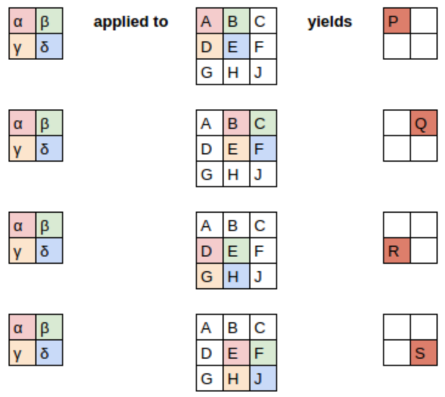
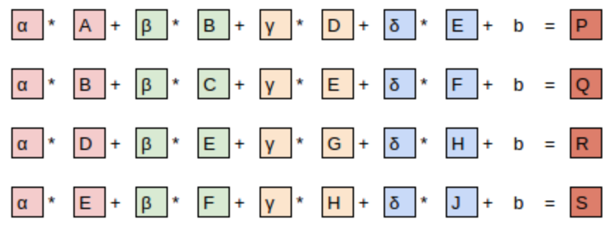
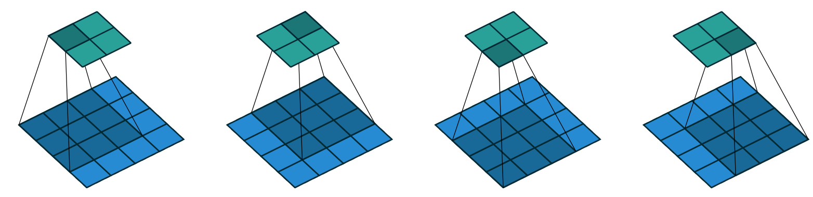
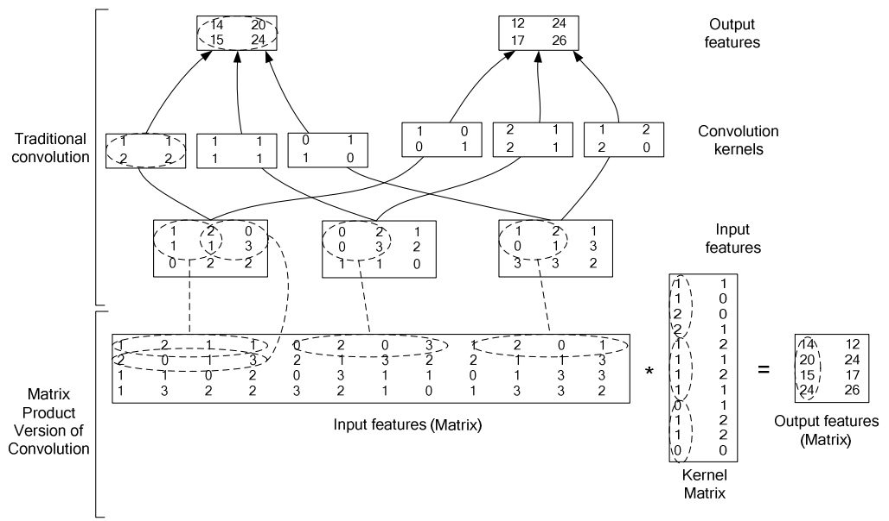
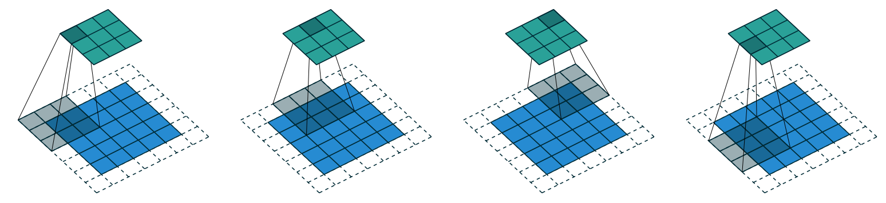
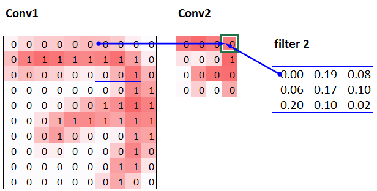
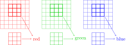
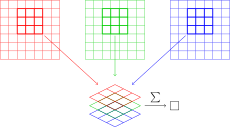

Notebook 07: Convolutions - The Heart of Computer Vision¶
What This Notebook Covers¶
This notebook introduces convolutions, the fundamental operation behind Convolutional Neural Networks (CNNs) that have revolutionized computer vision. We will learn:
- What is a convolution? - The mathematical operation explained simply
- Kernels (Filters) - Small matrices that detect features like edges
- How to apply convolutions manually - Understanding by doing
- PyTorch convolutions - The fast, efficient way
- Strides and Padding - Controlling output size
- Building a CNN - Putting it all together
- Receptive Field - How much of the input each output "sees"
- Color Images - Handling RGB channels
Why Are Convolutions Important?¶
Before CNNs, computer vision struggled with:
- Images have millions of pixels - too many parameters for fully connected networks
- Objects can appear anywhere in an image - we need translation invariance
- Local patterns matter - a vertical edge is a vertical edge, wherever it appears
Convolutions solve all these problems:
- They use parameter sharing - the same small filter is applied everywhere
- They detect local patterns - edges, textures, shapes
- They are translation invariant - detect a cat whether it's in the corner or center
# =====================================================
# IMPORTS - Libraries we'll use throughout this notebook
# =====================================================
# --- PyTorch Core ---
import torch # The main PyTorch library
from torch import nn # Neural network module (layers, models)
from torch import tensor # For creating tensors easily
import torch.nn.functional as F # Functional operations (conv2d, relu, etc.)
from torch import optim # Optimizers (SGD, Adam, etc.)
from torch.utils.data import DataLoader # For batching data
# --- Data Handling ---
import pickle # For loading saved Python objects
import gzip # For reading compressed files
from pathlib import Path # Modern path handling
# --- Visualization ---
import matplotlib as mpl # Matplotlib configuration
import matplotlib.pyplot as plt # For creating plots
import numpy as np # Numerical operations
import pandas as pd # Data manipulation (for nice tables)
# --- Other ---
import math, os, time # Standard utilities
from miniai.training import *
from miniai.datasets import *
# =====================================================
# MATPLOTLIB CONFIGURATION
# =====================================================
# Set the default colormap for images to grayscale
# This is appropriate for MNIST digits which are black and white
mpl.rcParams['image.cmap'] = 'gray'
# =====================================================
# HELPER FUNCTION: Display Images
# =====================================================
def show_image(im, ax=None, figsize=(3,3), title=None, noframe=True, cmap=None):
"""
Display a single image using matplotlib.
Arguments:
im - The image to display (can be a PyTorch tensor or a NumPy array)
ax - An existing matplotlib 'axis' (a subplot area). If None, we create a new one.
figsize - The physical size of the image window in inches (width, height)
title - A text string to show above the image
noframe - If True, it hides the x and y axis numbers and the border box
cmap - 'Colormap' (e.g., 'gray'). Tells matplotlib how to map numbers to colors.
"""
# If the user didn't provide a specific subplot area (ax), create a new figure and axis
if ax is None:
# plt.subplots returns a Figure (the whole window) and an Axis (the specific drawing area)
fig, ax = plt.subplots(figsize=figsize)
# Check if 'im' is a PyTorch tensor (it will have a '.cpu' method)
if hasattr(im, 'cpu'):
# .detach() stops tracking math history; .cpu() moves data from GPU to computer memory
im = im.detach().cpu()
# Check if 'im' can be converted to a NumPy array (which matplotlib requires)
if hasattr(im, 'numpy'):
# Convert the PyTorch/Fastai object into a standard NumPy numerical array
im = im.numpy()
# Use the axis 'imshow' method to actually draw the array as an image
ax.imshow(im, cmap=cmap)
# If a title string was provided, tell the axis to display it at the top
if title is not None:
ax.set_title(title)
# If noframe is True, we tell the axis to turn off the visibility of the border and scales
if noframe:
ax.axis('off')
# Return the axis object so the user can modify it further if they want
return ax
def show_images(ims, nrows=1, ncols=None, figsize=None, titles=None):
"""
Display multiple images in a organized grid (rows and columns).
Arguments:
ims - A list or collection of images
nrows - How many horizontal rows you want in your grid
ncols - How many vertical columns. If None, it calculates it based on total images.
figsize - The total size of the entire grid window
titles - A list of text strings, one for each image
"""
# If columns aren't specified, divide total images by rows to find needed columns
if ncols is None:
# '//' is integer division (e.g., 10 // 3 = 3)
ncols = len(ims) // nrows
# If no total figure size is set, automatically size it (3 inches per image)
if figsize is None:
figsize = (ncols * 3, nrows * 3)
# Create the grid of subplots. 'fig' is the window, 'axs' is a list/grid of drawing areas.
fig, axs = plt.subplots(nrows, ncols, figsize=figsize)
# If there is more than one image, 'axs' is a 2D grid. .flatten() turns it into a 1D list.
# If there's only one image, we wrap it in a list [axs] so we can still loop over it.
axs = axs.flatten() if hasattr(axs, 'flatten') else [axs]
# Loop through the list of images and the list of subplot areas simultaneously
# 'i' is the current index (0, 1, 2...), 'im' is the image, 'ax' is the specific subplot
for i, (im, ax) in enumerate(zip(ims, axs)):
# Check if we have a list of titles; if so, pick the title at the current index
title = titles[i] if titles else None
# Call our single-image function defined above to draw the image into this subplot
show_image(im, ax=ax, title=title)
# Adjust the spacing so that titles and images don't overlap with each other
plt.tight_layout()
# Return the figure and all the subplot areas
return fig, axs
Function 1: show_image — Display a Single Image¶
The Comment Header¶
# =====================================================
# HELPER FUNCTION: Display Images
# =====================================================
These are just decorative comments. They do nothing in the code. They are there to visually separate this section and tell the reader "this section is about helper functions for displaying images."
Function Definition¶
def show_image(im, ax=None, figsize=(3,3), title=None, noframe=True, cmap=None):
This line defines a function called show_image. Let's break down each parameter (input):
| Parameter | Default Value | What It Does |
|---|---|---|
im |
(required) | The image you want to display. Could be a PyTorch tensor or a NumPy array. |
ax |
None |
An optional matplotlib axes object. If you already have a subplot ready, pass it here. If None, the function creates a new figure. |
figsize |
(3, 3) |
The size of the figure in inches — 3 inches wide by 3 inches tall. Only used when ax is None. |
title |
None |
An optional title string to show above the image. If None, no title is shown. |
noframe |
True |
If True, the axis borders and tick marks are hidden (cleaner look). If False, they are shown. |
cmap |
None |
Short for "colormap." Controls how pixel values are colored. For example, 'gray' makes a grayscale image. If None, matplotlib uses its default colormap. |
Creating a New Figure (If Needed)¶
if ax is None:
fig, ax = plt.subplots(figsize=figsize)
Logic: If the caller did NOT provide an existing axes object (i.e., ax is None), we need to create one from scratch.
plt.subplots(figsize=figsize)creates a new figure and a single axes (subplot) inside it.figreceives the figure object (the entire canvas).axreceives the axes object (the drawing area where the image will go).figsize=figsizesets the figure size to whatever was passed in (default is 3×3 inches).
Why this matters: This makes the function flexible. You can use it standalone (it creates its own figure) OR embed it inside a grid of subplots (by passing an existing ax).
Converting a PyTorch Tensor to NumPy¶
if hasattr(im, 'cpu'):
im = im.detach().cpu()
Logic: This checks if the image (im) has a .cpu() method. If it does, it's very likely a PyTorch tensor.
hasattr(im, 'cpu')→ returnsTrueifimhas an attribute or method calledcpu. This is a safe way to check without crashing.im.detach()→ Detaches the tensor from PyTorch's computation graph. In deep learning, tensors track operations for backpropagation (gradient calculation). We don't need gradients for displaying an image, so we detach it..cpu()→ Moves the tensor from the GPU (if it was there) to the CPU. Matplotlib cannot display GPU tensors directly.if hasattr(im, 'numpy'): im = im.numpy()
Logic: This checks if im has a .numpy() method. After the previous step, it's now a CPU tensor.
im.numpy()→ Converts the PyTorch tensor into a NumPy array, which matplotlib can understand and display.
Why two separate checks? Because the image might already be a NumPy array (not a tensor), in which case both checks would be False and the image passes through unchanged. This makes the function work with both tensors and NumPy arrays.
Displaying the Image¶
ax.imshow(im, cmap=cmap)
ax.imshow()is matplotlib's function to display an image on an axes.imis the image data (now guaranteed to be a NumPy array or already compatible).cmap=cmappasses the colormap. IfcmapisNone, matplotlib uses its default (which is'viridis'for single-channel images or normal RGB for 3-channel images).
Setting the Title¶
if title is not None:
ax.set_title(title)
Logic: If the user provided a title string, display it above the image.
ax.set_title(title)sets the title text on the axes.- If
titleisNone(the default), this block is skipped entirely, and no title is shown.
Removing the Frame¶
if noframe:
ax.axis('off')
Logic: If noframe is True (which it is by default), hide all axis decorations.
ax.axis('off')removes the x-axis, y-axis, tick marks, tick labels, and the border around the image.- This gives a clean look — just the image with nothing around it.
- If you set
noframe=Falsewhen calling the function, the axis frame and tick marks will be visible (useful for debugging pixel coordinates).
Returning the Axes¶
return ax
The function returns the ax object. This is useful because:
- If the function created a new axes, the caller can use it to add more things (like annotations).
- If an existing axes was passed in, returning it maintains a consistent interface.
Function 2: show_images — Display Multiple Images in a Grid¶
Function Definition¶
def show_images(ims, nrows=1, ncols=None, figsize=None, titles=None):
This defines a function to display multiple images arranged in a grid layout.
| Parameter | Default Value | What It Does |
|---|---|---|
ims |
(required) | A list of images to display. |
nrows |
1 |
Number of rows in the grid. Default is 1 (all images in a single row). |
ncols |
None |
Number of columns. If None, it's calculated automatically. |
figsize |
None |
Size of the overall figure. If None, it's calculated automatically. |
titles |
None |
A list of title strings, one for each image. If None, no titles are shown. |
Auto-Calculating the Number of Columns¶
if ncols is None:
ncols = len(ims) // nrows
Logic: If the user didn't specify how many columns they want, calculate it automatically.
len(ims)→ the total number of images.// nrows→ integer division by the number of rows.- Example: If you have 6 images and 2 rows →
6 // 2 = 3columns. - Example: If you have 5 images and 1 row →
5 // 1 = 5columns.
Note: This uses integer division (//), so if the images don't divide evenly (e.g., 7 images, 2 rows → 7 // 2 = 3 columns = 6 slots), the last image won't be displayed. This is a simple approach that works well for evenly divisible cases.
Auto-Calculating the Figure Size¶
if figsize is None:
figsize = (ncols * 3, nrows * 3)
Logic: If no figure size was provided, calculate a reasonable default.
- Each image gets a 3×3 inch space.
ncols * 3→ total width in inches.nrows * 3→ total height in inches.- Example: 2 rows, 3 columns → figure is 9 inches wide × 6 inches tall.
Creating the Grid of Subplots¶
fig, axs = plt.subplots(nrows, ncols, figsize=figsize)
plt.subplots(nrows, ncols, ...)creates a figure with a grid of axes (subplots).fig→ the overall figure object.axs→ the axes objects. This could be:- A 2D array of axes (if
nrows > 1andncols > 1) - A 1D array of axes (if either
nrowsorncolsis 1) - A single axes object (if both
nrowsandncolsare 1)
- A 2D array of axes (if
Flattening the Axes Array¶
axs = axs.flatten() if hasattr(axs, 'flatten') else [axs]
Logic: We need axs to be a flat, 1D list so we can loop through it easily.
hasattr(axs, 'flatten')→ checks ifaxsis a NumPy array (which has a.flatten()method). This is true when there are multiple subplots.axs.flatten()→ converts a 2D array like[[ax1, ax2], [ax3, ax4]]into a 1D array[ax1, ax2, ax3, ax4].else [axs]→ ifaxsis a single axes object (only 1 subplot), wrap it in a list[axs]so the loop below still works.
Why this is needed: Without this, the zip(ims, axs) loop below would break when there's a 2D array or a single axes object.
Looping Through Images and Displaying Each One¶
for i, (im, ax) in enumerate(zip(ims, axs)):
title = titles[i] if titles else None
show_image(im, ax=ax, title=title)
Let's break this down piece by piece:
zip(ims, axs) → Pairs up each image with its corresponding axes.
- Example:
zip([img1, img2, img3], [ax1, ax2, ax3])→[(img1, ax1), (img2, ax2), (img3, ax3)]
enumerate(...) → Adds an index counter i to each pair.
- Example:
[(0, (img1, ax1)), (1, (img2, ax2)), (2, (img3, ax3))]
for i, (im, ax) in ... → Unpacks each iteration into:
i→ the index (0, 1, 2, ...)im→ the current imageax→ the current axes (subplot)
title = titles[i] if titles else None → If a titles list was provided, get the title for image i. Otherwise, set the title to None.
- This is a ternary expression (one-line if-else).
titlesevaluates toFalseif it'sNone(or an empty list), sotitlebecomesNone.
show_image(im, ax=ax, title=title) → Calls the show_image function we defined earlier to display this image on its designated subplot. We pass:
im→ the imageax=ax→ the specific subplot axes to draw ontitle=title→ the title for this image (orNone)
Tightening the Layout¶
plt.tight_layout()
plt.tight_layout()automatically adjusts the spacing between subplots so they don't overlap.- Without this, titles might overlap with adjacent images, or there might be too much/too little space between images.
Returning the Figure and Axes¶
return fig, axs
Returns both:
fig→ the figure object (useful for saving the figure withfig.savefig('output.png'))axs→ the array of axes (useful for further customization after calling the function)
How These Functions Work Together¶
The key design pattern here is reuse: show_images calls show_image internally for each individual image. This avoids duplicating code.
show_images(my_images)
│
├── Creates a grid of subplots
│
├── For each image:
│ │
│ └── Calls show_image(image, ax=subplot)
│ │
│ ├── Converts tensor → numpy (if needed)
│ ├── Displays image on the subplot
│ ├── Sets title (if any)
│ └── Removes frame (if noframe=True)
│
└── Adjusts layout and returns fig, axs
Quick Usage Examples¶
Display a Single Image¶
import matplotlib.pyplot as plt
# If `image` is a PyTorch tensor or NumPy array:
show_image(image, title="My Cat Photo")
plt.show()
Display Multiple Images in a Row¶
images = [img1, img2, img3, img4]
titles = ["Original", "Noisy", "Denoised", "Ground Truth"]
show_images(images, nrows=1, titles=titles)
plt.show()
Display in a 2×3 Grid¶
images = [img1, img2, img3, img4, img5, img6]
show_images(images, nrows=2) # ncols auto-calculated as 3
plt.show()
Loading the MNIST Dataset¶
We'll use MNIST - a classic dataset of handwritten digits (0-9). Each image is:
- 28 x 28 pixels (784 pixels total)
- Grayscale (single channel, values 0-1)
- The dataset has 60,000 training images and 10,000 validation images
# =====================================================
# LOADING MNIST DATA
# =====================================================
# Path to the data file
# Path() from pathlib makes working with file paths easier
path_data = Path('data')
path_gz = path_data / 'mnist.pkl.gz' # The / operator joins paths
# Load the compressed pickle file
# gzip.open() reads .gz compressed files
# pickle.load() deserializes Python objects saved to a file
with gzip.open(path_gz, 'rb') as f:
# The file contains: ((train_images, train_labels), (valid_images, valid_labels), test_data)
# We use _ to ignore test_data since we don't need it
((x_train, y_train), (x_valid, y_valid), _) = pickle.load(f, encoding='latin-1')
# Convert numpy arrays to PyTorch tensors
# map() applies the tensor() function to each array
x_train, y_train, x_valid, y_valid = map(tensor, [x_train, y_train, x_valid, y_valid])
# Let's see what we have
print(f"Training data shape: {x_train.shape}") # 50000 images, each flattened to 784 pixels
print(f"Training labels shape: {y_train.shape}") # 50000 labels (digits 0-9)
print(f"Validation data shape: {x_valid.shape}") # 10000 validation images
print(f"Data type: {x_train.dtype}") # float32
Training data shape: torch.Size([50000, 784]) Training labels shape: torch.Size([50000]) Validation data shape: torch.Size([10000, 784]) Data type: torch.float32
Understanding the data shape:
x_trainis shape(50000, 784)- 50,000 images, each flattened to a 1D vector of 784 pixels- For convolutions, we need 2D images, so we'll reshape:
784 = 28 × 28
# =====================================================
# RESHAPING TO 2D IMAGES
# =====================================================
# view() reshapes the tensor without copying data
# -1 means "infer this dimension" (will be 50000)
# 28, 28 are the height and width
#
# So we go from (50000, 784) to (50000, 28, 28)
x_imgs = x_train.view(-1, 28, 28) # Training images as 2D
xv_imgs = x_valid.view(-1, 28, 28) # Validation images as 2D
print(f"2D image shape: {x_imgs.shape}")
print(f"Single image shape: {x_imgs[0].shape}")
2D image shape: torch.Size([50000, 28, 28]) Single image shape: torch.Size([28, 28])
# Set display resolution for images
mpl.rcParams['figure.dpi'] = 70 # Higher = sharper images
# =====================================================
# VISUALIZING A SAMPLE IMAGE
# =====================================================
# Let's look at the 8th image (index 7) - it's a nice "3"
im3 = x_imgs[7]
print(f"Image shape: {im3.shape}")
print(f"Pixel value range: {im3.min():.2f} to {im3.max():.2f}")
print(f"Label: {y_train[7]}")
# Display the image
show_image(im3)
Image shape: torch.Size([28, 28]) Pixel value range: 0.00 to 1.00 Label: 3
<Axes: >
![No description has been provided for this image]()
🛠️ Interactive visualizations — one-time setup¶
The cells marked 🎮 Interactive below embed standalone HTML/JS visualizations
(stored in the interactive_viz/ folder next to this notebook) at full width and
~full viewport height. Run the next cell once, then run any 🎮 cell.
# ============================================================================
# INTERACTIVE VISUALIZATIONS -- setup (run this cell ONCE).
# Each "🎮 Interactive" cell below loads a standalone HTML file from the
# published copy on GitHub Pages, in an isolated <iframe> (its CSS/JS can't leak
# into the notebook). It is shown FULL WIDTH and auto-fits its content height.
# No local files needed -- the visualizations are read from GitHub.
# ============================================================================
from IPython.display import HTML
def show_viz(path, height="600px"):
"""Embed an interactive visualization full width; it auto-fits its height.
`path` may be a bare 'interactive_viz/<file>.html' (resolved to the GitHub
Pages copy) or a full https URL."""
base = "https://shammun.github.io/shammunul-fastai-notes/notebooks/"
if not path.startswith("http"):
path = base + path
return HTML(
f'<iframe src="{path}" loading="lazy" allowfullscreen '
f'style="width:100%;height:{height};border:1px solid #dde5f2;border-radius:12px;'
f'box-shadow:0 8px 24px rgba(123,92,214,.12);background:#fff;"></iframe>'
'<script>addEventListener("message",function(e){'
'if(e.data&&e.data.type==="ce-frame-height"&&e.data.height>50){'
'var fs=document.querySelectorAll("iframe");for(var i=0;i<fs.length;i++){'
'if(fs[i].contentWindow===e.source){fs[i].style.height=e.data.height+"px";break;}}}});</script>'
)
Part 2: What is a Convolution?¶
The Big Picture¶
A convolution is an operation that:
- Takes a small matrix called a kernel (or filter)
- Slides it across the image
- At each position, computes the element-wise multiplication and sums the results
- The output is a new image called a feature map or activation map
Visual Explanation¶
Imagine you have a 3×3 input image and a 2×2 kernel:
Input Image (3×3): Kernel (2×2):
┌───┬───┬───┐ ┌───┬───┐
│ 1 │ 2 │ 3 │ │ 1 │ 0 │
├───┼───┼───┤ ├───┼───┤
│ 4 │ 5 │ 6 │ │ 0 │ 1 │
├───┼───┼───┤ └───┴───┘
│ 7 │ 8 │ 9 │
└───┴───┴───┘
Step 1: Position kernel at top-left
┌───┬───┐───┐
│ 1 │ 2 │ 3 │ 1×1 + 2×0 + 4×0 + 5×1 = 1 + 0 + 0 + 5 = 6
├───┼───┤───┤
│ 4 │ 5 │ 6 │
└───┴───┴───┘
Step 2: Slide kernel right
┌───┬───┬───┐
│ 1 │ 2 │ 3 │ 2×1 + 3×0 + 5×0 + 6×1 = 2 + 0 + 0 + 6 = 8
├───┼───┼───┤
│ 4 │ 5 │ 6 │
└───┴───┴───┘
Steps 3-4: Slide down, repeat...
Result (2×2):
┌───┬───┐
│ 6 │ 8 │
├───┼───┤
│12 │14 │
└───┴───┘
The Convolution Formula¶
For a 3×3 kernel, if we label the input pixels:
$$\begin{matrix} a_1 & a_2 & a_3 \ a_4 & a_5 & a_6 \ a_7 & a_8 & a_9 \end{matrix}$$And the kernel weights:
$$\begin{matrix} k_1 & k_2 & k_3 \ k_4 & k_5 & k_6 \ k_7 & k_8 & k_9 \end{matrix}$$The output is:
$$\text{output} = \sum_{i=1}^{9} a_i \cdot k_i = a_1 k_1 + a_2 k_2 + ... + a_9 k_9$$This is just element-wise multiplication followed by summation - also known as a dot product!
A Worked Example (from the fastbook)
Here’s the input — a small patch of pixel values:

Here’s our kernel — the small weight matrix we slide over it:

Since the filter fits in the image four times, we get four output activations:

Applying the kernel at one position — element-wise multiply, then sum:

Written as an equation, a single output cell is just a weighted sum of the nine inputs:

🎮 Interactive: slide a kernel over a digit — the formula, alive¶
The formula above is just three moves repeated everywhere. In this playground a 3×3 kernel slides over a 9×9 "7":
What to try
- Click the stage chips — ① place window → ② multiply → ③ sum & write — each one highlights the matching line of code.
- Click any output pixel to jump the kernel straight to that position.
- Switch kernels (top edge / left edge / diagonal / blur / sharpen) or pick custom and edit any weight.
- Use ▶ Play with the speed slider, or step one move at a time.
# ============================================================================
# INTERACTIVE -- run this cell. It loads ./interactive_viz/conv_kernel_slide.html
# at full width, sized to fit the visualization (setup cell near the top required).
# Keep the 'interactive_viz' folder in the SAME directory as this notebook.
# ============================================================================
show_viz("interactive_viz/conv_kernel_slide.html", height="700px")
Part 3: Edge Detection with Kernels¶
What Are Edges and Why Do They Matter?¶
In computer vision, edges are boundaries where pixel intensity changes sharply. Edges are important because:
- They define the shape of objects
- They're more informative than flat regions
- The digit "7" has a horizontal edge at the top and a diagonal edge going down
We can design kernels that detect edges by responding strongly to intensity changes.
The Top Edge Detector¶
Here's a kernel that detects horizontal edges (specifically, transitions from dark to light going downward):
# =====================================================
# TOP EDGE DETECTION KERNEL
# =====================================================
# This kernel detects horizontal edges (top edges of objects)
#
# How it works:
# - Top row has -1s: penalizes bright pixels at top
# - Middle row has 0s: ignores the middle
# - Bottom row has +1s: rewards bright pixels at bottom
#
# When this kernel is placed over a horizontal edge
# (dark on top, light on bottom), the result is a large positive number.
# When placed over a uniform area, positive and negative cancel out.
top_edge = tensor([
[-1, -1, -1], # Top row: subtract these pixels
[ 0, 0, 0], # Middle: ignore
[ 1, 1, 1] # Bottom: add these pixels
]).float() # .float() converts to float32 (needed for calculations)
print("Top edge detection kernel:")
print(top_edge)
Top edge detection kernel:
tensor([[-1., -1., -1.],
[ 0., 0., 0.],
[ 1., 1., 1.]])
Why does this detect top edges?
Consider what happens in different situations:
| Region Type | Top pixels | Bottom pixels | Calculation | Result |
|---|---|---|---|---|
| Uniform dark (0s) | 0, 0, 0 | 0, 0, 0 | 0 - 0 | 0 (no edge) |
| Uniform bright (1s) | 1, 1, 1 | 1, 1, 1 | 3 - 3 | 0 (no edge) |
| Top edge (dark→bright) | 0, 0, 0 | 1, 1, 1 | 3 - 0 | +3 (strong edge!) |
| Bottom edge (bright→dark) | 1, 1, 1 | 0, 0, 0 | 0 - 3 | -3 (opposite edge) |
# Let's visualize the kernel
show_image(top_edge, noframe=False, figsize=(2,2))
plt.title("Top Edge Kernel\n(white=+1, black=-1, gray=0)")
Text(0.5, 1.0, 'Top Edge Kernel\n(white=+1, black=-1, gray=0)')
![No description has been provided for this image]()
# =====================================================
# VIEWING THE IMAGE AS NUMBERS
# =====================================================
# Let's look at the actual pixel values in part of our image
# We'll create a DataFrame for nice display
# Take the top-left portion of the image (first 13 rows, first 23 columns)
df = pd.DataFrame(im3[:13, :23].numpy())
# Format: 2 decimal places, small font, color-coded by value
df.style.format(precision=2).set_properties(**{'font-size': '7pt'}).background_gradient('Greys')
| 0 | 1 | 2 | 3 | 4 | 5 | 6 | 7 | 8 | 9 | 10 | 11 | 12 | 13 | 14 | 15 | 16 | 17 | 18 | 19 | 20 | 21 | 22 | |
|---|---|---|---|---|---|---|---|---|---|---|---|---|---|---|---|---|---|---|---|---|---|---|---|
| 0 | 0.00 | 0.00 | 0.00 | 0.00 | 0.00 | 0.00 | 0.00 | 0.00 | 0.00 | 0.00 | 0.00 | 0.00 | 0.00 | 0.00 | 0.00 | 0.00 | 0.00 | 0.00 | 0.00 | 0.00 | 0.00 | 0.00 | 0.00 |
| 1 | 0.00 | 0.00 | 0.00 | 0.00 | 0.00 | 0.00 | 0.00 | 0.00 | 0.00 | 0.00 | 0.00 | 0.00 | 0.00 | 0.00 | 0.00 | 0.00 | 0.00 | 0.00 | 0.00 | 0.00 | 0.00 | 0.00 | 0.00 |
| 2 | 0.00 | 0.00 | 0.00 | 0.00 | 0.00 | 0.00 | 0.00 | 0.00 | 0.00 | 0.00 | 0.00 | 0.00 | 0.00 | 0.00 | 0.00 | 0.00 | 0.00 | 0.00 | 0.00 | 0.00 | 0.00 | 0.00 | 0.00 |
| 3 | 0.00 | 0.00 | 0.00 | 0.00 | 0.00 | 0.00 | 0.00 | 0.00 | 0.00 | 0.00 | 0.00 | 0.00 | 0.00 | 0.00 | 0.00 | 0.00 | 0.00 | 0.00 | 0.00 | 0.00 | 0.00 | 0.00 | 0.00 |
| 4 | 0.00 | 0.00 | 0.00 | 0.00 | 0.00 | 0.00 | 0.00 | 0.00 | 0.00 | 0.00 | 0.00 | 0.00 | 0.00 | 0.00 | 0.00 | 0.00 | 0.00 | 0.00 | 0.00 | 0.00 | 0.00 | 0.00 | 0.00 |
| 5 | 0.00 | 0.00 | 0.00 | 0.00 | 0.00 | 0.00 | 0.00 | 0.00 | 0.00 | 0.00 | 0.00 | 0.15 | 0.17 | 0.41 | 1.00 | 0.99 | 0.99 | 0.99 | 0.99 | 0.99 | 0.68 | 0.02 | 0.00 |
| 6 | 0.00 | 0.00 | 0.00 | 0.00 | 0.00 | 0.00 | 0.00 | 0.00 | 0.00 | 0.17 | 0.54 | 0.88 | 0.88 | 0.98 | 0.99 | 0.98 | 0.98 | 0.98 | 0.98 | 0.98 | 0.98 | 0.62 | 0.05 |
| 7 | 0.00 | 0.00 | 0.00 | 0.00 | 0.00 | 0.00 | 0.00 | 0.00 | 0.00 | 0.70 | 0.98 | 0.98 | 0.98 | 0.98 | 0.99 | 0.98 | 0.98 | 0.98 | 0.98 | 0.98 | 0.98 | 0.98 | 0.23 |
| 8 | 0.00 | 0.00 | 0.00 | 0.00 | 0.00 | 0.00 | 0.00 | 0.00 | 0.00 | 0.43 | 0.98 | 0.98 | 0.90 | 0.52 | 0.52 | 0.52 | 0.52 | 0.74 | 0.98 | 0.98 | 0.98 | 0.98 | 0.23 |
| 9 | 0.00 | 0.00 | 0.00 | 0.00 | 0.00 | 0.00 | 0.00 | 0.00 | 0.00 | 0.02 | 0.11 | 0.11 | 0.09 | 0.00 | 0.00 | 0.00 | 0.00 | 0.05 | 0.88 | 0.98 | 0.98 | 0.67 | 0.03 |
| 10 | 0.00 | 0.00 | 0.00 | 0.00 | 0.00 | 0.00 | 0.00 | 0.00 | 0.00 | 0.00 | 0.00 | 0.00 | 0.00 | 0.00 | 0.00 | 0.00 | 0.00 | 0.33 | 0.95 | 0.98 | 0.98 | 0.56 | 0.00 |
| 11 | 0.00 | 0.00 | 0.00 | 0.00 | 0.00 | 0.00 | 0.00 | 0.00 | 0.00 | 0.00 | 0.00 | 0.00 | 0.00 | 0.00 | 0.00 | 0.00 | 0.34 | 0.74 | 0.98 | 0.98 | 0.98 | 0.05 | 0.00 |
| 12 | 0.00 | 0.00 | 0.00 | 0.00 | 0.00 | 0.00 | 0.00 | 0.00 | 0.00 | 0.00 | 0.00 | 0.00 | 0.00 | 0.00 | 0.36 | 0.83 | 0.96 | 0.98 | 0.98 | 0.98 | 0.80 | 0.04 | 0.00 |
Reading the table above:
- Black cells (value ~0) are dark (background)
- White cells (value ~1) are bright (the digit)
- You can see the "3" shape forming in the right side
Now let's apply our kernel to specific locations:
# =====================================================
# MANUAL CONVOLUTION - Example 1
# =====================================================
# Extract a 3x3 patch from the image
# Rows 3 to 5 (Python slicing: 3:6), Columns 14 to 16 (14:17)
patch1 = im3[3:6, 14:17]
print("Patch from image (rows 3-5, cols 14-16):")
print(patch1)
print()
print("Kernel:")
print(top_edge)
print()
print("Element-wise multiplication:")
print(patch1 * top_edge)
print()
print(f"Sum (the convolution output): {(patch1 * top_edge).sum():.4f}")
Patch from image (rows 3-5, cols 14-16):
tensor([[0.0000, 0.0000, 0.0000],
[0.0000, 0.0000, 0.0000],
[0.9961, 0.9883, 0.9883]])
Kernel:
tensor([[-1., -1., -1.],
[ 0., 0., 0.],
[ 1., 1., 1.]])
Element-wise multiplication:
tensor([[-0.0000, -0.0000, -0.0000],
[0.0000, 0.0000, 0.0000],
[0.9961, 0.9883, 0.9883]])
Sum (the convolution output): 2.9727
The result is close to 0 because this region is relatively uniform (all dark or no strong edge).
Let's try a region with a clear edge:
# =====================================================
# MANUAL CONVOLUTION - Example 2 (Finding an Edge)
# =====================================================
# Extract a 3x3 patch that should contain a top edge
# Rows 7 to 9, Columns 14 to 16
patch2 = im3[7:10, 14:17]
print("Patch from image (rows 7-9, cols 14-16):")
print(patch2)
print()
print("Notice: bottom row is brighter than top row - this is an edge!")
print()
print("Element-wise multiplication:")
print(patch2 * top_edge)
print()
print(f"Sum (the convolution output): {(patch2 * top_edge).sum():.4f}")
Patch from image (rows 7-9, cols 14-16):
tensor([[0.9883, 0.9844, 0.9844],
[0.5195, 0.5156, 0.5156],
[0.0000, 0.0000, 0.0000]])
Notice: bottom row is brighter than top row - this is an edge!
Element-wise multiplication:
tensor([[-0.9883, -0.9844, -0.9844],
[ 0.0000, 0.0000, 0.0000],
[ 0.0000, 0.0000, 0.0000]])
Sum (the convolution output): -2.9570
A larger positive value indicates a strong horizontal edge!
Now let's create a function to make this easier:
# =====================================================
# FUNCTION TO APPLY KERNEL AT A SPECIFIC LOCATION
# =====================================================
def apply_kernel(row, col, kernel):
"""
Apply a 3x3 kernel to the image at a specific (row, col) position.
Arguments:
row - The center row of the 3x3 patch
col - The center column of the 3x3 patch
kernel - A 3x3 tensor (the filter)
Returns:
The sum of element-wise multiplication (scalar value)
How it works:
- Extracts a 3x3 patch centered at (row, col)
- Multiplies element-wise with the kernel
- Returns the sum
Note: The patch is from (row-1) to (row+1) inclusive, same for columns.
Python slicing [row-1:row+2] gives us exactly 3 rows.
"""
# Extract 3x3 patch: rows from row-1 to row+1, cols from col-1 to col+1
patch = im3[row-1:row+2, col-1:col+2]
# Element-wise multiply and sum
return (patch * kernel).sum()
# Test the function
# This should give the same result as our manual calculation above
result = apply_kernel(8, 15, top_edge) # Center at row 8, col 15
print(f"Kernel applied at position (8, 15): {result:.4f}")
Kernel applied at position (8, 15): -2.9570
Creating the Full Edge Map¶
Now let's apply the kernel to every valid position in the image to create an edge map.
Important: For a 28×28 image with a 3×3 kernel:
- We can't apply the kernel at the edges (no pixels to the left of column 0!)
- Valid positions: rows 1-26, columns 1-26 (center positions)
- Output size: 26×26
# =====================================================
# UNDERSTANDING LIST COMPREHENSIONS
# =====================================================
# Before we create the edge map, let's understand nested list comprehensions
#
# A list comprehension: [expression for variable in iterable]
# Nested: [[expression for j in range] for i in range]
# Example: Create a 5x5 grid of (row, col) coordinates
grid = [[(i, j) for j in range(5)] for i in range(5)]
print("5x5 coordinate grid:")
for row in grid:
print(row)
5x5 coordinate grid: [(0, 0), (0, 1), (0, 2), (0, 3), (0, 4)] [(1, 0), (1, 1), (1, 2), (1, 3), (1, 4)] [(2, 0), (2, 1), (2, 2), (2, 3), (2, 4)] [(3, 0), (3, 1), (3, 2), (3, 3), (3, 4)] [(4, 0), (4, 1), (4, 2), (4, 3), (4, 4)]
# =====================================================
# CREATING THE TOP EDGE MAP
# =====================================================
# Range of valid center positions: 1 to 26 (inclusive)
# range(1, 27) gives [1, 2, 3, ..., 26]
rng = range(1, 27)
# Apply the kernel at every valid position using nested list comprehension
#
# For each row i from 1 to 26:
# For each column j from 1 to 26:
# Compute apply_kernel(i, j, top_edge)
#
# This creates a 26x26 list of lists, which we convert to a tensor
top_edge_map = tensor([[apply_kernel(i, j, top_edge) for j in rng] for i in rng])
print(f"Edge map shape: {top_edge_map.shape}")
print(f"Original image shape: {im3.shape}")
print(f"Note: Output is 2 pixels smaller in each dimension (28 - 2 = 26)")
Edge map shape: torch.Size([26, 26]) Original image shape: torch.Size([28, 28]) Note: Output is 2 pixels smaller in each dimension (28 - 2 = 26)
# =====================================================
# VISUALIZING THE TOP EDGE MAP
# =====================================================
fig, (ax1, ax2) = plt.subplots(1, 2, figsize=(10, 4))
show_image(im3, ax=ax1)
ax1.set_title("Original Image (digit 3)")
show_image(top_edge_map, ax=ax2)
ax2.set_title("Top Edge Map\n(bright = horizontal edge detected)")
plt.tight_layout()
![No description has been provided for this image]()
Notice how:
- The top edge map shows bright spots where the original image has horizontal edges
- The top curve of the "3" is highlighted
- Vertical lines (sides of the digit) are mostly invisible to this filter
The Left Edge Detector¶
Now let's create a kernel that detects vertical edges (left edges):
# =====================================================
# LEFT EDGE DETECTION KERNEL
# =====================================================
# This kernel detects vertical edges (left edges of objects)
#
# How it works:
# - Left column has -1s: penalizes bright pixels on left
# - Middle column has 0s: ignores the middle
# - Right column has +1s: rewards bright pixels on right
#
# When this kernel is placed over a vertical edge
# (dark on left, light on right), the result is a large positive number.
left_edge = tensor([
[-1, 0, 1], # Top row
[-1, 0, 1], # Middle row
[-1, 0, 1] # Bottom row
]).float()
print("Left edge detection kernel:")
print(left_edge)
Left edge detection kernel:
tensor([[-1., 0., 1.],
[-1., 0., 1.],
[-1., 0., 1.]])
# Visualize the kernel
show_image(left_edge, noframe=False, figsize=(2,2))
plt.title("Left Edge Kernel")
Text(0.5, 1.0, 'Left Edge Kernel')
![No description has been provided for this image]()
# =====================================================
# CREATING THE LEFT EDGE MAP
# =====================================================
left_edge_map = tensor([[apply_kernel(i, j, left_edge) for j in rng] for i in rng])
# Compare original, top edges, and left edges
fig, (ax1, ax2, ax3) = plt.subplots(1, 3, figsize=(12, 4))
show_image(im3, ax=ax1)
ax1.set_title("Original Image")
show_image(top_edge_map, ax=ax2)
ax2.set_title("Top Edges\n(horizontal)")
show_image(left_edge_map, ax=ax3)
ax3.set_title("Left Edges\n(vertical)")
plt.tight_layout()
![No description has been provided for this image]()
Compare the two edge maps:
- Top edges highlight the curved parts of the "3" where the stroke goes horizontally
- Left edges highlight where the stroke goes vertically
Together, these would capture the full outline of the digit!
🎮 Interactive: edge-detection lab — see why the kernel fires¶
You just saw top-edge and left-edge maps of the "3". This lab shows the term-by-term arithmetic behind each verdict:
What to try
- Walk the scenario chips: uniform region → top edge → bottom edge → vertical edge — watch which terms cancel and which survive.
- Open ⑤ draw your own: paint any shape on the 16×16 canvas (Box / Seven presets too) and watch the edge map update live (teal = positive, red = negative).
- Switch kernels — including a custom editable one — and repaint.
# ============================================================================
# INTERACTIVE -- run this cell. It loads ./interactive_viz/edge_kernel_lab.html
# at full width, sized to fit the visualization (setup cell near the top required).
# Keep the 'interactive_viz' folder in the SAME directory as this notebook.
# ============================================================================
show_viz("interactive_viz/edge_kernel_lab.html", height="760px")
Part 4: Convolutions in PyTorch¶
Our manual convolution works, but it's very slow. For each position, we're doing Python loops, which are inefficient.
PyTorch provides highly optimized convolution operations that run on GPU and use efficient algorithms.
Understanding the im2col Algorithm¶
The key insight: convolution is just a bunch of dot products. If we rearrange the data cleverly, we can use matrix multiplication (which is extremely optimized on GPUs).
The technique is called im2col (image to column):
- Extract all the patches that the kernel will be applied to
- Flatten each patch into a column
- Stack all columns into a matrix
- Flatten the kernel into a row
- Matrix multiply: kernel_row @ patch_matrix
Let's see this in action:
Visualizing the Convolution
Applying a kernel across a grid — the kernel slides over every position:
Here’s the result of applying a 3×3 kernel to a 4×4 image (animation courtesy of Vincent Dumoulin and Francesco Visin):

The im2col trick. Rather than looping in Python, we lay every sliding window out as a column of a matrix; convolution then collapses into a single matrix multiply:

import torch.nn.functional as F
import torch
# =====================================================
# THE UNFOLD OPERATION (im2col in PyTorch)
# =====================================================
# F.unfold extracts all patches from an image
#
# First, we need to add batch and channel dimensions to our image
# PyTorch expects: (batch_size, channels, height, width)
#
# None adds a new dimension of size 1:
# im3 shape: (28, 28)
# im3[None] shape: (1, 28, 28)
# im3[None, None]: (1, 1, 28, 28) <- batch=1, channels=1
inp = im3[None, None, :, :].float() # Add batch and channel dims
print(f"Input shape: {inp.shape}")
print(f" - Batch size: {inp.shape[0]}")
print(f" - Channels: {inp.shape[1]}")
print(f" - Height: {inp.shape[2]}")
print(f" - Width: {inp.shape[3]}")
Input shape: torch.Size([1, 1, 28, 28]) - Batch size: 1 - Channels: 1 - Height: 28 - Width: 28
# =====================================================
# EXTRACTING ALL PATCHES WITH F.unfold
# =====================================================
# F.unfold(input, kernel_size) extracts all patches where the kernel fits
#
# For a 28x28 image with 3x3 kernel:
# - 26x26 = 676 valid positions
# - Each patch is 3x3 = 9 pixels
#
# Output shape: (batch, kernel_elements, num_patches)
# = (1, 9, 676)
inp_unf = F.unfold(inp, (3, 3)) # Extract 3x3 patches
print(f"Unfolded shape: {inp_unf.shape}")
# Remove the batch dimension for easier math
inp_unf = inp_unf[0]
print(f"After removing batch dim: {inp_unf.shape}")
print(f" - 9 = 3×3 pixels per patch")
print(f" - 676 = 26×26 = number of patches")
Unfolded shape: torch.Size([1, 9, 676]) After removing batch dim: torch.Size([9, 676]) - 9 = 3×3 pixels per patch - 676 = 26×26 = number of patches
# =====================================================
# FLATTEN THE KERNEL
# =====================================================
# Flatten the 3x3 kernel into a 1D vector of 9 elements
w = left_edge.view(-1) # -1 means "flatten to 1D"
print(f"Kernel shape: {left_edge.shape} -> Flattened: {w.shape}")
print(f"Kernel values: {w}")
Kernel shape: torch.Size([3, 3]) -> Flattened: torch.Size([9]) Kernel values: tensor([-1., 0., 1., -1., 0., 1., -1., 0., 1.])
# =====================================================
# CONVOLUTION AS MATRIX MULTIPLICATION
# =====================================================
# Now we can compute all convolutions with a single matrix multiplication!
#
# w @ inp_unf:
# w shape: (9,)
# inp_unf shape: (9, 676)
# output shape: (676,) <- one output for each patch
#
# The @ operator is matrix/vector multiplication
out_unf = w @ inp_unf
print(f"Output shape (flattened): {out_unf.shape}")
Output shape (flattened): torch.Size([676])
# =====================================================
# RESHAPE BACK TO 2D IMAGE
# =====================================================
# Reshape the flat output back to a 26x26 image
out = out_unf.view(26, 26)
print(f"Output image shape: {out.shape}")
# Display it - should match our manual result!
show_image(out)
Output image shape: torch.Size([26, 26])
<Axes: >
![No description has been provided for this image]()
🎮 Interactive: im2col / unfold — convolution as ONE matrix multiply¶
This is the exact trick the cells above performed: sliding windows become columns of a matrix, the kernel becomes a row, and convolution collapses into a single matmul.
What to try
- Step the stages: ①
F.unfold(patches fly into columns) → ②kernel.view(1, 9)→ ③ matmul → ④ reshape to 4×4. - Click any column of the patch matrix — it highlights the source window in the input and its output pixel.
- Click any output pixel to trace it back the other way.
# ============================================================================
# INTERACTIVE -- run this cell. It loads ./interactive_viz/im2col_unfold.html
# at full width, sized to fit the visualization (setup cell near the top required).
# Keep the 'interactive_viz' folder in the SAME directory as this notebook.
# ============================================================================
show_viz("interactive_viz/im2col_unfold.html", height="700px")
This is exactly the same as our manual convolution, but much faster!
Using F.conv2d - The Easy Way¶
PyTorch's F.conv2d does all of this (and more optimizations) automatically:
# =====================================================
# PYTORCH'S BUILT-IN CONVOLUTION
# =====================================================
# F.conv2d(input, weight) performs 2D convolution
#
# Input shape: (batch, in_channels, height, width)
# Weight shape: (out_channels, in_channels, kernel_h, kernel_w)
#
# Our kernel is 3x3, but we need to add dimensions:
# left_edge shape: (3, 3)
# left_edge[None, None] shape: (1, 1, 3, 3) <- 1 output channel, 1 input channel
# Prepare the kernel
kernel = left_edge[None, None] # Add output_channel and input_channel dims
print(f"Kernel shape for conv2d: {kernel.shape}")
# Apply convolution
output = F.conv2d(inp, kernel)
print(f"Output shape: {output.shape}")
# Display (remove batch and channel dims for visualization)
show_image(output[0, 0])
Kernel shape for conv2d: torch.Size([1, 1, 3, 3]) Output shape: torch.Size([1, 1, 26, 26])
<Axes: >
# Speed comparison (run each multiple times for reliable measurement)
import time
# Method 1: Manual Python loops
start = time.time()
for _ in range(1):
manual = tensor([[apply_kernel(i, j, left_edge) for j in rng] for i in rng])
manual_time = time.time() - start
# Method 2: Unfold + matrix multiply
start = time.time()
for _ in range(100):
unfold_result = (w @ F.unfold(inp, (3,3))[0]).view(26, 26)
unfold_time = (time.time() - start) / 100
# Method 3: F.conv2d
start = time.time()
for _ in range(100):
conv_result = F.conv2d(inp, left_edge[None, None])
conv_time = (time.time() - start) / 100
print(f"Manual loops: {manual_time*1000:.2f} ms")
print(f"Unfold + matmul: {unfold_time*1000:.4f} ms ({manual_time/unfold_time:.0f}x faster)")
print(f"F.conv2d: {conv_time*1000:.4f} ms ({manual_time/conv_time:.0f}x faster)")
Manual loops: 16.80 ms Unfold + matmul: 0.1588 ms (106x faster) F.conv2d: 0.1136 ms (148x faster)
PyTorch's optimized operations are hundreds or thousands of times faster!
Multiple Kernels at Once¶
In practice, we use many kernels to detect different features. PyTorch can apply all of them in a single operation.
# =====================================================
# DIAGONAL EDGE KERNELS
# =====================================================
# Diagonal kernel 1: detects edges going from top-right to bottom-left
diag1_edge = tensor([
[ 0, -1, 1],
[-1, 1, 0],
[ 1, 0, 0]
]).float()
# Diagonal kernel 2: detects edges going from top-left to bottom-right
diag2_edge = tensor([
[ 1, -1, 0],
[ 0, 1, -1],
[ 0, 0, 1]
]).float()
# Visualize all four kernels
fig, axes = plt.subplots(1, 4, figsize=(12, 3))
for ax, kernel, name in zip(axes,
[top_edge, left_edge, diag1_edge, diag2_edge],
['Top Edge', 'Left Edge', 'Diagonal 1', 'Diagonal 2']):
show_image(kernel, ax=ax, noframe=False)
ax.set_title(name)
plt.tight_layout()
![No description has been provided for this image]()
# =====================================================
# APPLYING MULTIPLE KERNELS TO A BATCH OF IMAGES
# =====================================================
# Prepare a batch of 16 images
# Shape: (16, 1, 28, 28) - 16 images, 1 channel each
xb = x_imgs[:16][:, None] # Add channel dimension
print(f"Batch shape: {xb.shape}")
# Stack all 4 kernels together
# Each kernel is (3, 3), we need (out_channels, in_channels, H, W)
# So we stack them and add the in_channels dimension
edge_kernels = torch.stack([left_edge, top_edge, diag1_edge, diag2_edge])
print(f"Stacked kernels: {edge_kernels.shape}")
edge_kernels = edge_kernels[:, None] # Add in_channels dimension
print(f"Final kernel shape: {edge_kernels.shape}")
print(f" - 4 output channels (one per kernel)")
print(f" - 1 input channel")
print(f" - 3x3 kernel size")
Batch shape: torch.Size([16, 1, 28, 28]) Stacked kernels: torch.Size([4, 3, 3]) Final kernel shape: torch.Size([4, 1, 3, 3]) - 4 output channels (one per kernel) - 1 input channel - 3x3 kernel size
# =====================================================
# BATCH CONVOLUTION
# =====================================================
# Apply all 4 kernels to all 16 images at once!
batch_features = F.conv2d(xb, edge_kernels)
print(f"Output shape: {batch_features.shape}")
print(f" - 16 images")
print(f" - 4 feature maps per image (one per kernel)")
print(f" - 26x26 pixels each (28 - 3 + 1 = 26)")
Output shape: torch.Size([16, 4, 26, 26]) - 16 images - 4 feature maps per image (one per kernel) - 26x26 pixels each (28 - 3 + 1 = 26)
xb.shape
torch.Size([16, 1, 28, 28])
Understanding the Extra Dimension of 1 in conv2d¶
What this section clarifies¶
We just saw two tensors with a puzzling extra 1 in their shapes:
xb.shape→(16, 1, 28, 28)edge_kernels.shape→(4, 1, 3, 3)
The confusion: Why is there an extra dimension of 1 in both the batch of images and the stacked kernels, and how is that helpful?
The short answer: both 1s are the channel dimension, and they exist so that F.conv2d can correctly match the input's channels to each kernel's channels.
The fixed 4D layout conv2d requires¶
F.conv2d always expects a specific 4D layout for both arguments:
- Input:
(batch, in_channels, H, W) - Weight (kernels):
(out_channels, in_channels, H, W)
Every axis must be present, even when its size is just 1.
The 1 in xb → (16, 1, 28, 28)¶
MNIST images are grayscale, so they have exactly one input channel. A color image would have 3 channels (RGB).
The convolution operation always needs a channel axis to slide kernels over, even when there is only one channel. Without it, the tensor would be (16, 28, 28), which conv2d cannot interpret unambiguously.
The 1 in edge_kernels → (4, 1, 3, 3)¶
This 1 is the kernel's in_channels, and it must match the input's in_channels (both are 1 here).
The rule is that each kernel spans all input channels: a single kernel has shape (in_channels, H, W), and you stack out_channels of them. Since our input has only 1 channel, each kernel only needs to cover that 1 channel.
How the dimensions connect¶
input: (16, 1, 28, 28)
│
└── must match ──┐
│
weight: ( 4, 1, 3, 3)
│
└── becomes output channels
output: (16, 4, 26, 26)
in_channelsof the input (1) must equalin_channelsof the weight (1).out_channelsof the weight (4, our four edge kernels) becomes the channel count of the output.- Each of the 16 images now carries 4 feature maps, one per kernel.
Why this design is helpful¶
The channel dimension is what makes conv layers composable.
The 4 output channels here can become the input channels of the next conv layer, whose kernels would then have shape (next_out, 4, 3, 3). Stacking convs this way — each layer's out_channels feeding the next layer's in_channels — is exactly how deep CNNs build up from simple edge detectors to complex features. The single-channel case is just the degenerate starting point.
Quick rule of thumb¶
In
conv2d, the second dimension of the input and the second dimension of the weight must always be equal.
That second dimension is in_channels in both cases.
batch_features[0,0].shape
torch.Size([26, 26])
# =====================================================
# VISUALIZING THE FEATURE MAPS
# =====================================================
#
# GOAL OF THIS BLOCK:
# Pick one image out of our batch and display, side by side:
# (1) the original input image, and
# (2) the 4 feature maps produced when our 4 edge-detecting
# kernels were convolved over that image.
# This lets us SEE what each kernel "responds to" — e.g. left edges,
# top edges, and the two diagonal directions.
#
# CONTEXT / SHAPES WE ALREADY HAVE COMING IN:
# xb -> the batch of input images, shape (16, 1, 28, 28)
# = (batch_size, in_channels, height, width)
# batch_features -> the conv2d output, shape (16, 4, 26, 26)
# = (batch_size, out_channels, height, width)
# Each of the 16 images now has 4 feature maps
# (one per edge kernel), each 26x26 pixels.
# show_image(...) -> a helper (from fastai / this course) that renders
# a single 2D tensor as a grayscale image. It can
# optionally draw onto a specific matplotlib axis
# via the `ax=` argument.
# y_train -> the training labels (the digit each image shows).
# Choose WHICH image in the batch we want to inspect.
# Index 1 = the second image (Python indexing starts at 0).
img_idx = 1 # Second image in batch
# -----------------------------------------------------
# 1) SHOW THE ORIGINAL IMAGE
# -----------------------------------------------------
# Print a label line telling us which digit this image is supposed to be.
# y_train[img_idx] looks up the ground-truth class label for this image.
# The f"..." f-string substitutes that label directly into the text.
print(f"Original image (label: {y_train[img_idx]}):")
# xb[img_idx, 0] selects:
# img_idx -> the chosen image along the batch dimension
# 0 -> channel 0 (the only channel, since these are grayscale)
# The result is a 2D (28 x 28) tensor — exactly what show_image expects.
show_image(xb[img_idx, 0])
# plt.show() flushes/renders the figure that show_image just drew,
# so it appears in the notebook output before we move on.
plt.show()
# -----------------------------------------------------
# 2) SHOW ALL 4 FEATURE MAPS FOR THAT SAME IMAGE
# -----------------------------------------------------
# Header text for the grid of feature maps that follows.
print("Edge feature maps:")
# Create a figure with 1 row and 4 columns of sub-plots — one cell per kernel.
# plt.subplots(nrows, ncols, ...) returns:
# fig -> the overall figure container (we don't use it directly here)
# axes -> an array of 4 Axes objects, one per column, that we draw into
# figsize=(14, 3) sets the figure size in inches (wide and short, so the
# four maps sit comfortably in a single row).
fig, axes = plt.subplots(1, 4, figsize=(14, 3))
# Human-readable titles describing what each kernel detects.
# Their ORDER must match the order in which the kernels were stacked
# into edge_kernels earlier (left, top, diag1, diag2).
titles = ['Left Edges', 'Top Edges', 'Diagonal 1', 'Diagonal 2']
# Loop over the 4 sub-plots and their matching titles together.
# zip(axes, titles) pairs each Axes with its title -> (ax0,'Left Edges'), ...
# enumerate(...) also gives us a running counter i = 0,1,2,3, which we
# use to pick the correct feature-map channel.
for i, (ax, title) in enumerate(zip(axes, titles)):
# batch_features has (16, 4, 26, 26) shape
# batch_features[img_idx, i] selects:
# img_idx -> our chosen image
# i -> feature-map channel i (the output of the i-th kernel)
# So batch_features[img_idx, i] has the shape of a 2D (26 x 26) tensor.
# ax=ax tells show_image to draw onto THIS sub-plot instead of a new one.
show_image(batch_features[img_idx, i], ax=ax)
# Label this sub-plot so we know which kernel produced the map shown.
ax.set_title(title)
# tight_layout() automatically adjusts spacing/padding between the sub-plots
# so titles and images don't overlap or get clipped.
plt.tight_layout()
Original image (label: 0):
![No description has been provided for this image]()
Edge feature maps:
![No description has been provided for this image]()
Each kernel detects different features!
- Horizontal edges show where the stroke goes left-right
- Vertical edges show where it goes up-down
- Diagonal edges show the angled parts
Together, these give a rich representation of the digit's shape.
Part 5: Strides and Padding¶
The Size Problem¶
We've seen that a 28×28 image with a 3×3 kernel produces a 26×26 output. This shrinkage is a problem:
- After several layers, the image becomes tiny
- We lose information at the edges
Two concepts help control output size:
- Padding - Add zeros around the edges to maintain size
- Stride - Skip positions to reduce size intentionally
Padding¶
Padding adds extra pixels (usually zeros) around the border of the image.
Original 3x3: With padding=1 (5x5):
┌───┬───┬───┐ ┌───┬───┬───┬───┬───┐
│ 1 │ 2 │ 3 │ │ 0 │ 0 │ 0 │ 0 │ 0 │
├───┼───┼───┤ ├───┼───┼───┼───┼───┤
│ 4 │ 5 │ 6 │ --> │ 0 │ 1 │ 2 │ 3 │ 0 │
├───┼───┼───┤ ├───┼───┼───┼───┼───┤
│ 7 │ 8 │ 9 │ │ 0 │ 4 │ 5 │ 6 │ 0 │
└───┴───┴───┘ ├───┼───┼───┼───┼───┤
│ 0 │ 7 │ 8 │ 9 │ 0 │
├───┼───┼───┼───┼───┤
│ 0 │ 0 │ 0 │ 0 │ 0 │
└───┴───┴───┴───┴───┘
Magic formula for same-size output:
- For a kernel of size
ks × ks(whereksis odd) - Use padding =
ks // 2 - Example: 3×3 kernel → padding = 1, 5×5 kernel → padding = 2
Stride¶
Stride is how many pixels we move the kernel each step.
- Stride 1 (default): Move one pixel at a time, output is similar size to input
- Stride 2: Move two pixels at a time, output is half the size
- Stride 4: Move four pixels at a time, output is quarter the size
Stride 2 is commonly used in CNNs to reduce image size (instead of pooling).
5x5 input, 3x3 kernel, stride 2:
Position 1: Position 2: Position 3: Position 4:
┌───┬───┬───┐ ┌───┬───┬───┐ ┌───┬───┬───┐ ┌───┬───┬───┐
│ X │ X │ X │ │ │ │ X │ │ X │ X │ X │ │ │ │ X │
├───┼───┼───┤ ├───┼───┼───┤ ├───┼───┼───┤ ├───┼───┼───┤
│ X │ X │ X │ │ │ │ X │ │ │ │ │ │ │ │ │
├───┼───┼───┤ ├───┼───┼───┤ ├───┼───┼───┤ ├───┼───┼───┤
│ X │ X │ X │ │ │ │ X │ │ X │ X │ X │ │ │ │ X │
└───┴───┴───┘ └───┴───┴───┘ ├───┼───┼───┤ ├───┼───┼───┤
│ X │ X │ X │ │ │ │ X │
├───┼───┼───┤ ├───┼───┼───┤
│ X │ X │ X │ │ │ │ X │
└───┴───┴───┘ └───┴───┴───┘
Output is 2x2 (roughly half in each dimension)
Padding and Stride, Visually
With appropriate padding we can keep the output the same size as the input:

A 4×4 kernel with a 5×5 input and 2 pixels of padding gives a 6×6 activation map (courtesy of Vincent Dumoulin and Francesco Visin):

A stride-2 convolution — a 3×3 kernel on a 5×5 input with 1 pixel of padding — moves two pixels at a time, roughly halving the output:

Output Size Formula¶
For input size n, kernel size k, padding p, and stride s:
Common cases:
| Input | Kernel | Padding | Stride | Output | Notes |
|---|---|---|---|---|---|
| 28 | 3 | 0 | 1 | 26 | Shrinks by kernel-1 |
| 28 | 3 | 1 | 1 | 28 | Same size (padding = k//2) |
| 28 | 3 | 1 | 2 | 14 | Half size (stride 2) |
| 14 | 3 | 1 | 2 | 7 | Half again |
| 7 | 3 | 1 | 2 | 4 | And again... |
🎮 Interactive: stride & padding playground — the output-size formula, live¶
Don't memorize $\lfloor (n + 2p - k)/s \rfloor + 1$ — drive it:
What to try
- Drag the n / k / p / s sliders and watch the formula recompute with your numbers plugged in.
- Try the preset chips: valid (p=0, s=1), same (p=k//2), halve (s=2) and the 5×5 kernel case.
- Watch for the ⚠️ badge when the floor drops leftover pixels — now you know where "off-by-one" output sizes come from.
- Click any output cell to see exactly which input window produced it (padding cells are striped).
# ============================================================================
# INTERACTIVE -- run this cell. It loads ./interactive_viz/stride_padding_playground.html
# at full width, sized to fit the visualization (setup cell near the top required).
# Keep the 'interactive_viz' folder in the SAME directory as this notebook.
# ============================================================================
show_viz("interactive_viz/stride_padding_playground.html")
Part 6: Building a CNN¶
Now let's put everything together and build a Convolutional Neural Network for classifying MNIST digits!
CNN Architecture Overview¶
A typical CNN has:
- Convolutional layers - Extract features using learned kernels
- Activation functions (ReLU) - Add non-linearity
- Downsampling (stride 2 or pooling) - Reduce spatial size
- Final layer - Map features to class predictions
# =====================================================
# DATA PREPARATION
# =====================================================
# Get data dimensions
n, m = x_train.shape # n = number of samples, m = number of features
c = y_train.max() + 1 # c = number of classes (0-9 = 10 classes)
print(f"Training samples: {n}")
print(f"Features per sample: {m}")
print(f"Number of classes: {c}")
nh = 50
Training samples: 50000 Features per sample: 784 Number of classes: 10
model = nn.Sequential(
nn.Linear(m, nh), # number of pixels to the number of hidden neurons
nn.ReLU(), # ReLU
nn.Linear(nh, 10) # number of hidden neurons to the number of classes
) # Previously for our MLP models
A First (Broken) Attempt¶
Let's try building a simple CNN and see what problems arise:
# =====================================================
# A "BROKEN" CNN - TO ILLUSTRATE THE PROBLEM
# =====================================================
# nn.Conv2d(in_channels, out_channels, kernel_size, padding)
#
# This network:
# - Takes 1-channel input (grayscale)
# - First conv: 1 -> 30 channels, 3x3 kernel, padding=1 (same size)
# - ReLU activation
# - Second conv: 30 -> 10 channels (one per digit class)
broken_cnn = nn.Sequential(
nn.Conv2d(1, 30, kernel_size=3, padding=1), # 28x28 -> 28x28, 30 channels
nn.ReLU(),
nn.Conv2d(30, 10, kernel_size=3, padding=1) # 28x28 -> 28x28, 10 channels
)
# Let's see what output shape we get
output = broken_cnn(xb.float())
print(f"Input shape: {xb.shape}")
print(f"Output shape: {output.shape}")
Input shape: torch.Size([16, 1, 28, 28]) Output shape: torch.Size([16, 10, 28, 28])
Problem: The output is (16, 10, 28, 28), but we need (16, 10) for classification!
We have a 28×28 grid of predictions for each of 10 classes. We need to:
- Reduce the spatial dimensions to 1×1
- Flatten to get a single prediction per class
The Solution: Stride-2 Convolutions¶
We can use stride-2 convolutions to progressively reduce the image size:
# =====================================================
# HELPER FUNCTION: CREATE CONV LAYER WITH ReLU
# =====================================================
def conv(ni, nf, ks=3, stride=2, act=True):
"""
Create a convolution layer with optional ReLU activation.
Arguments:
ni - Number of input channels
nf - Number of output channels (filters)
ks - Kernel size (default 3 for 3x3)
stride - Stride (default 2 to halve spatial size)
act - Whether to add ReLU activation (default True)
Returns:
A Conv2d layer, optionally wrapped with ReLU in a Sequential
Notes:
- padding=ks//2 ensures output size = input size / stride
- For ks=3, padding=1
- With stride=2, each layer halves the spatial dimensions
"""
# Create the convolution layer
res = nn.Conv2d(ni, nf, stride=stride, kernel_size=ks, padding=ks//2)
# Optionally wrap with ReLU
if act:
res = nn.Sequential(res, nn.ReLU())
return res
Why create this helper function?
- Less error-prone - No need to calculate padding each time
- Cleaner code - The CNN definition becomes easy to read
- Consistent patterns - All layers use the same conventions
- Easy to modify - Change one place to affect all layers
# =====================================================
# A SIMPLE CNN THAT WORKS!
# =====================================================
# The key insight: use stride=2 to halve the image size at each layer
#
# Starting with 28x28:
# 28 -> 14 -> 7 -> 4 -> 2 -> 1
#
# At 1x1, we can flatten to get one value per channel
simple_cnn = nn.Sequential(
conv(1, 4), # 28x28 input image -> 14x14 feature map, 4 channels -- start with 1 channel and end with 4 channels
conv(4, 8), # 14x14 -> 7x7 feature map, 8 channels
conv(8, 16), # 7x7 -> 4x4 feature map, 16 channels
conv(16, 16), # 4x4 -> 2x2 feature map, 16 channels
conv(16, 10, act=False), # 2x2 -> 1x1 feature map, 10 channels (no ReLU on final layer!)
nn.Flatten(), # (batch, 10, 1, 1) -> (batch, 10) -- remove unneccessary dimensions
)
print("Simple CNN architecture:")
print(simple_cnn)
Simple CNN architecture:
Sequential(
(0): Sequential(
(0): Conv2d(1, 4, kernel_size=(3, 3), stride=(2, 2), padding=(1, 1))
(1): ReLU()
)
(1): Sequential(
(0): Conv2d(4, 8, kernel_size=(3, 3), stride=(2, 2), padding=(1, 1))
(1): ReLU()
)
(2): Sequential(
(0): Conv2d(8, 16, kernel_size=(3, 3), stride=(2, 2), padding=(1, 1))
(1): ReLU()
)
(3): Sequential(
(0): Conv2d(16, 16, kernel_size=(3, 3), stride=(2, 2), padding=(1, 1))
(1): ReLU()
)
(4): Conv2d(16, 10, kernel_size=(3, 3), stride=(2, 2), padding=(1, 1))
(5): Flatten(start_dim=1, end_dim=-1)
)
How Does Each conv Layer Halve the Feature Map in simple_cnn?¶
The Question¶
In the following CNN, each layer halves the spatial dimensions: 28→14→7→4→2→1. How does this halving happen at every layer? Is there a hidden MaxPool somewhere?
simple_cnn = nn.Sequential(
conv(1, 4), # 28x28 -> 14x14, 4 channels
conv(4, 8), # 14x14 -> 7x7, 8 channels
conv(8, 16), # 7x7 -> 4x4, 16 channels
conv(16, 16), # 4x4 -> 2x2, 16 channels
conv(16, 10, act=False), # 2x2 -> 1x1, 10 channels
nn.Flatten(), # (batch, 10, 1, 1) -> (batch, 10)
)
The Answer: It's All stride=2 — No MaxPool¶
There is no pooling layer anywhere in this network. The halving at every layer comes from stride=2, which is baked into the conv helper function as a default parameter:
def conv(ni, nf, ks=3, stride=2, act=True):
res = nn.Conv2d(ni, nf, stride=stride, kernel_size=ks, padding=ks//2)
if act:
res = nn.Sequential(res, nn.ReLU())
return res
So every call like conv(1, 4) or conv(4, 8) — where stride is not explicitly passed — automatically uses stride=2. This means the convolution kernel jumps 2 pixels at a time instead of 1, cutting the output size in half in each spatial dimension.
The other crucial default is padding=ks//2 = 1, which pads the input with a 1-pixel border of zeros. This ensures the halving works out cleanly without losing edge pixels.
Layer-by-Layer Walkthrough¶
The output size formula is:
$$\text{output} = \left\lfloor \frac{\text{input} + 2 \times \text{padding} - \text{kernel\size}}{\text{stride}} \right\rfloor + 1$$With our defaults (ks=3, padding=1, stride=2), let's trace each layer:
Layer 1: conv(1, 4) — 28×28 → 14×14¶
$$\left\lfloor \frac{28 + 2(1) - 3}{2} \right\rfloor + 1 = \left\lfloor \frac{27}{2} \right\rfloor + 1 = 13 + 1 = \mathbf{14}$$The single grayscale channel (1) is expanded into 4 feature maps, each 14×14.
Layer 2: conv(4, 8) — 14×14 → 7×7¶
$$\left\lfloor \frac{14 + 2(1) - 3}{2} \right\rfloor + 1 = \left\lfloor \frac{13}{2} \right\rfloor + 1 = 6 + 1 = \mathbf{7}$$The 4 channels become 8, and each feature map shrinks from 14×14 to 7×7.
Layer 3: conv(8, 16) — 7×7 → 4×4¶
$$\left\lfloor \frac{7 + 2(1) - 3}{2} \right\rfloor + 1 = \left\lfloor \frac{6}{2} \right\rfloor + 1 = 3 + 1 = \mathbf{4}$$8 channels become 16. Note that 7/2 = 3.5, but the floor operation rounds down, giving us 4×4.
Layer 4: conv(16, 16) — 4×4 → 2×2¶
$$\left\lfloor \frac{4 + 2(1) - 3}{2} \right\rfloor + 1 = \left\lfloor \frac{3}{2} \right\rfloor + 1 = 1 + 1 = \mathbf{2}$$Channel count stays at 16, but spatial size halves again to 2×2.
Layer 5: conv(16, 10, act=False) — 2×2 → 1×1¶
$$\left\lfloor \frac{2 + 2(1) - 3}{2} \right\rfloor + 1 = \left\lfloor \frac{1}{2} \right\rfloor + 1 = 0 + 1 = \mathbf{1}$$This final conv compresses everything to a 1×1 spatial map with 10 channels (one per digit class). act=False skips ReLU because this is the output layer — we need raw logits for the loss function.
Final: nn.Flatten() — Reshape for Classification¶
The tensor shape at this point is (batch, 10, 1, 1). Flatten removes the trivial 1×1 spatial dimensions, giving (batch, 10) — exactly what we need for computing cross-entropy loss against 10 digit classes.
Summary Table¶
| Layer | What It Creates | Input Shape | Output Shape | What Changes |
|---|---|---|---|---|
conv(1, 4) |
Conv2d(1,4,3,stride=2,pad=1) + ReLU |
1 × 28 × 28 | 4 × 14 × 14 | Channels: 1→4, Space: ÷2 |
conv(4, 8) |
Conv2d(4,8,3,stride=2,pad=1) + ReLU |
4 × 14 × 14 | 8 × 7 × 7 | Channels: 4→8, Space: ÷2 |
conv(8, 16) |
Conv2d(8,16,3,stride=2,pad=1) + ReLU |
8 × 7 × 7 | 16 × 4 × 4 | Channels: 8→16, Space: ÷2 |
conv(16, 16) |
Conv2d(16,16,3,stride=2,pad=1) + ReLU |
16 × 4 × 4 | 16 × 2 × 2 | Channels: same, Space: ÷2 |
conv(16, 10, act=False) |
Conv2d(16,10,3,stride=2,pad=1) |
16 × 2 × 2 | 10 × 1 × 1 | Channels: 16→10, Space: ÷2 |
nn.Flatten() |
— | 10 × 1 × 1 | 10 | Remove spatial dims |
The Design Pattern¶
The architecture follows a common CNN design principle: as spatial dimensions shrink (÷2 each layer), the number of channels grows (roughly ×2 each layer). This means information isn't lost — it's traded from spatial resolution into channel depth. The network starts by seeing a large image with few features, and ends with a tiny spatial map but many rich, abstract feature channels.
Key Takeaway: Every
conv(ni, nf)call in this notebook usesstride=2by default — no MaxPool is needed. The convolution itself handles both feature extraction and downsampling in a single learned operation.
# Verify the output shape
output = simple_cnn(xb.float())
print(f"Input shape: {xb.shape}")
print(f"Output shape: {output.shape}")
print(f"\nPerfect! We get 10 values per image (one for each digit class)")
Input shape: torch.Size([16, 1, 28, 28]) Output shape: torch.Size([16, 10]) Perfect! We get 10 values per image (one for each digit class)
Let's trace through the shapes:
| Layer | Input Shape | Output Shape | Notes |
|---|---|---|---|
| Input | - | (16, 1, 28, 28) | 16 images, 1 channel |
| conv(1, 4) | (16, 1, 28, 28) | (16, 4, 14, 14) | Stride 2 halves size |
| conv(4, 8) | (16, 4, 14, 14) | (16, 8, 7, 7) | |
| conv(8, 16) | (16, 8, 7, 7) | (16, 16, 4, 4) | |
| conv(16, 16) | (16, 16, 4, 4) | (16, 16, 2, 2) | |
| conv(16, 10) | (16, 16, 2, 2) | (16, 10, 1, 1) | Final conv |
| Flatten | (16, 10, 1, 1) | (16, 10) | Remove spatial dims |
🎮 Interactive: inside simple_cnn — 28×28 pixels → 10 numbers¶
The shape table above, as a clickable machine:
What to try
- Click any volume (or its chip) to see that layer's code line, its shape math (28→14→7→4→2→1), its parameter count, and why it's there.
- ▶ Play the forward pass to watch the image shrink while channels grow.
- Click the parameter bar at the bottom — see where the 30,154 parameters actually live (hint: mostly the deep layers).
# ============================================================================
# INTERACTIVE -- run this cell. It loads ./interactive_viz/cnn_architecture_explorer.html
# at full width, sized to fit the visualization (setup cell near the top required).
# Keep the 'interactive_viz' folder in the SAME directory as this notebook.
# ============================================================================
show_viz("interactive_viz/cnn_architecture_explorer.html", height="710px")
Training the CNN¶
Now let's train our CNN on MNIST!
# =====================================================
# PREPARE DATA FOR TRAINING
# =====================================================
# Reshape images to (N, C, H, W) format for conv layers
x_imgs = x_train.view(-1, 1, 28, 28) # Add channel dimension
xv_imgs = x_valid.view(-1, 1, 28, 28)
print(f"Training images shape: {x_imgs.shape}")
print(f"Validation images shape: {xv_imgs.shape}")
Training images shape: torch.Size([50000, 1, 28, 28]) Validation images shape: torch.Size([10000, 1, 28, 28])
# =====================================================
# DEVICE SELECTION (GPU IF AVAILABLE)
# =====================================================
# Choose the best available device
# MPS = Apple Silicon GPU, CUDA = NVIDIA GPU, else CPU
if torch.backends.mps.is_available():
device = 'mps'
elif torch.cuda.is_available():
device = 'cuda'
else:
device = 'cpu'
print(f"Using device: {device}")
Using device: cpu
# =====================================================
# SIMPLE DATASET CLASS
# =====================================================
class Dataset:
"""
A simple dataset that pairs inputs (x) with labels (y).
Required for PyTorch's DataLoader.
"""
def __init__(self, x, y):
self.x = x
self.y = y
def __len__(self):
return len(self.x)
def __getitem__(self, i):
return self.x[i], self.y[i]
# Create datasets
train_ds = Dataset(x_imgs, y_train)
valid_ds = Dataset(xv_imgs, y_valid)
def get_dls(train_ds, valid_ds, bs, **kwargs):
return (DataLoader(train_ds, batch_size=bs, shuffle=True, **kwargs),
DataLoader(valid_ds, batch_size=bs*2, **kwargs))
# =====================================================
# DATA LOADERS WITH DEVICE TRANSFER
# =====================================================
def to_device(x, device=device):
"""Move a tensor or collection of tensors to the device."""
if isinstance(x, torch.Tensor):
return x.to(device)
if isinstance(x, dict):
return {k: v.to(device) for k, v in x.items()}
return type(x)(to_device(o, device) for o in x)
def collate_device(batch):
"""Collate function that moves data to device."""
from torch.utils.data import default_collate
return to_device(default_collate(batch))
# Training hyperparameters
bs = 256 # Batch size
lr = 0.4 # Learning rate
# Create data loaders
train_dl = DataLoader(train_ds, batch_size=bs, shuffle=True, collate_fn=collate_device)
valid_dl = DataLoader(valid_ds, batch_size=bs, shuffle=False, collate_fn=collate_device)
print(f"Batch size: {bs}")
print(f"Training batches: {len(train_dl)}")
print(f"Validation batches: {len(valid_dl)}")
train_dl,valid_dl = get_dls(train_ds, valid_ds, bs, collate_fn=collate_device)
Batch size: 256 Training batches: 196 Validation batches: 40
# =====================================================
# TRAINING AND VALIDATION FUNCTIONS
# =====================================================
def accuracy(preds, targets):
"""Calculate accuracy: fraction of correct predictions."""
return (preds.argmax(dim=1) == targets).float().mean()
def train_epoch(model, loss_func, opt, train_dl):
"""Train for one epoch."""
model.train() # Set to training mode
for xb, yb in train_dl:
# Forward pass
preds = model(xb)
loss = loss_func(preds, yb)
# Backward pass
loss.backward()
opt.step()
opt.zero_grad()
def validate(model, loss_func, valid_dl):
"""Calculate validation loss and accuracy."""
model.eval() # Set to evaluation mode
with torch.no_grad():
losses, accs, counts = [], [], []
for xb, yb in valid_dl:
preds = model(xb)
losses.append(loss_func(preds, yb) * len(xb))
accs.append(accuracy(preds, yb) * len(xb))
counts.append(len(xb))
total = sum(counts)
return sum(losses)/total, sum(accs)/total
def fit(epochs, model, loss_func, opt, train_dl, valid_dl):
"""Train for multiple epochs and track progress."""
for epoch in range(epochs):
train_epoch(model, loss_func, opt, train_dl)
loss, acc = validate(model, loss_func, valid_dl)
print(f"Epoch {epoch+1}: loss={loss:.4f}, accuracy={acc:.4f}")
return loss, acc
def_device = device
# =====================================================
# TRAIN THE CNN!
# =====================================================
# Re-create the model (fresh weights)
simple_cnn = nn.Sequential(
conv(1, 4), # 28x28 -> 14x14
conv(4, 8), # 14x14 -> 7x7
conv(8, 16), # 7x7 -> 4x4
conv(16, 16), # 4x4 -> 2x2
conv(16, 10, act=False), # 2x2 -> 1x1
nn.Flatten(),
).to(device)
# Optimizer
opt = optim.SGD(simple_cnn.parameters(), lr=lr)
# Train for 5 epochs
print("Training for 5 epochs...")
print("=" * 40)
loss, acc = fit(5, simple_cnn.to(def_device), F.cross_entropy, opt, train_dl, valid_dl)
Training for 5 epochs... ======================================== Epoch 1: loss=0.2971, accuracy=0.9057 Epoch 2: loss=0.2811, accuracy=0.9176 Epoch 3: loss=0.1816, accuracy=0.9441 Epoch 4: loss=0.1352, accuracy=0.9598 Epoch 5: loss=0.1856, accuracy=0.9411
# =====================================================
# CONTINUE TRAINING WITH LOWER LEARNING RATE
# =====================================================
# Lower the learning rate and train more
opt = optim.SGD(simple_cnn.parameters(), lr=lr/4)
print("\nContinuing with lower learning rate...")
print("=" * 40)
loss, acc = fit(5, simple_cnn, F.cross_entropy, opt, train_dl, valid_dl)
print(f"\nFinal accuracy: {acc:.2%}")
Continuing with lower learning rate... ======================================== Epoch 1: loss=0.0829, accuracy=0.9757 Epoch 2: loss=0.0790, accuracy=0.9766 Epoch 3: loss=0.0772, accuracy=0.9775 Epoch 4: loss=0.0752, accuracy=0.9785 Epoch 5: loss=0.0771, accuracy=0.9778 Final accuracy: 97.78%
We achieved ~98% accuracy with a simple CNN! This is much better than a fully-connected network and uses far fewer parameters.
Part 7: Understanding Convolution Arithmetic¶
Let's examine the actual weights in our trained CNN to understand what's happening.
Number of parameters¶
tensor([o.numel() for o in simple_cnn.parameters()])
sum(o.numel() for o in simple_cnn.parameters())
5274
# =====================================================
# EXAMINING CNN LAYER WEIGHTS
# =====================================================
# Get the first convolutional layer
# simple_cnn[0] is the first Sequential (conv + ReLU)
# simple_cnn[0][0] is the Conv2d layer itself
conv1 = simple_cnn[0][0]
# torch.size([4, 1, 3, 3])
print("First conv layer:")
print(conv1)
print()
print(f"Weight shape: {conv1.weight.shape}")
print(f" - 4 output channels (filters)")
print(f" - 1 input channel")
print(f" - 3x3 kernel size")
print()
print(f"Bias shape: {conv1.bias.shape}")
print(f" - One bias per output channel")
First conv layer: Conv2d(1, 4, kernel_size=(3, 3), stride=(2, 2), padding=(1, 1)) Weight shape: torch.Size([4, 1, 3, 3]) - 4 output channels (filters) - 1 input channel - 3x3 kernel size Bias shape: torch.Size([4]) - One bias per output channel
Weight tensor shape: (out_channels, in_channels, kernel_height, kernel_width)
Each output channel has its own complete set of kernels (one for each input channel). The outputs are computed by:
- Applying each kernel to its corresponding input channel
- Summing all the results
- Adding the bias
Receptive Field¶
The receptive field is the area of the original input that affects a particular output pixel.
For our simple CNN with five 3×3 convolutions (stride 2):
- After layer 1: each output pixel "sees" a 3×3 area of input
- After layer 2: each output pixel "sees" a larger area (because it combines multiple layer-1 outputs)
- By the final layer: each output "sees" most or all of the original image
This is crucial: Deeper layers can detect larger, more complex patterns because they have access to more context.
Tracing the Receptive Field in a Spreadsheet
If you trace the precedents of one cell in the second conv layer, you see the cells that fed it directly — its immediate precedents:

Trace one level further back and a 7×7 area of the input turns out to influence that single deep activation — that area is its receptive field:

🎮 Interactive: receptive field explorer — what one deep neuron "sees"¶
A 3×3 kernel sounds tiny — yet deep layers recognise whole digits. Here's why:
What to try
- Click any neuron in any layer and watch its cone of influence descend to the input pixels.
- Change kernel size (3/5/7) and stride (1/2): with stride 2 the receptive field roughly doubles per layer (geometric); with stride 1 it grows by only k−1 per layer (linear).
- Follow the live RF table —
r ← r + (k−1)·j,j ← j·s— the same numbers, computed before your eyes.
# ============================================================================
# INTERACTIVE -- run this cell. It loads ./interactive_viz/receptive_field_explorer.html
# at full width, sized to fit the visualization (setup cell near the top required).
# Keep the 'interactive_viz' folder in the SAME directory as this notebook.
# ============================================================================
show_viz("interactive_viz/receptive_field_explorer.html", height="620px")
Part 8: Color Images (RGB)¶
So far we've worked with grayscale images (1 channel). Real images are usually in color with 3 channels: Red, Green, Blue (RGB).
How Convolution Works with Multiple Input Channels¶
For a color image:
- The kernel has separate weights for each input channel
- We apply each channel's kernel to its channel
- We sum all the results to get one output value
RGB Image (3 channels): 3-channel kernel: Output (1 value):
Red ──────► [kernel_R] ─┐
├──► SUM ──► output value
Green ──────► [kernel_G] ─┤
│
Blue ──────► [kernel_B] ─┘
So a Conv2d layer going from 3 input channels to 16 output channels would have:
- 16 filters
- Each filter has 3 sets of kernel weights (one per input channel)
- Weight shape: (16, 3, kernel_h, kernel_w)
Convolution Over an RGB Image
A colour picture is a rank-3 tensor; the kernel gains a matching depth so it spans all three channels at once:

The three per-channel results are then added together to produce a single number for each grid location, for each output feature:

Seeing the Channels in Action: Two Teaching Examples¶
To build intuition for how an RGB image is really just three stacked grayscale images, it helps to run the same channel-splitting code on two very different inputs:
- Example 1 — a real photograph (a grizzly bear). The channels carry natural colour: brown fur, green foliage, a hint of sky. This is what real model inputs look like.
- Example 2 — a synthetic image we build by hand. We set Red to increase top→bottom, Green left→right, and Blue to a constant. Because we defined every pixel, we know exactly what each channel must contain — a perfect sanity check that we're reading the channels correctly.
Both blocks below exist purely for understanding: the same visualisation code, run on two images — one messy and real, one clean and controlled. In an actual network the "channels" are simply the first dimension of the input tensor.
Example 1 — A real photograph (grizzly bear)¶
We read the photo straight from GitHub (with decode_image on the downloaded bytes) so the exact same code works locally and on Colab — no local images/ folder required.
# =====================================================
# EXAMPLE 1 - LOAD A REAL PHOTO (read directly from GitHub)
# =====================================================
from torchvision.io import decode_image
import torch, urllib.request
# The grizzly photo lives in the GitHub repo, so we read it straight from there
# instead of relying on a local 'images/' folder (which Colab does not have).
GRIZZLY_URL = 'https://raw.githubusercontent.com/shammun/shammunul-fastai-notes/main/notebooks/images/grizzly.jpg'
raw_bytes = urllib.request.urlopen(GRIZZLY_URL).read()
im = decode_image(torch.frombuffer(bytearray(raw_bytes), dtype=torch.uint8))
print("Image shape:", tuple(im.shape))
print(" -", im.shape[0], "color channels (RGB)")
print(" -", im.shape[1], "pixels height")
print(" -", im.shape[2], "pixels width")
print("Pixel value range:", int(im.min()), "to", int(im.max()))
Image shape: (3, 1000, 846) - 3 color channels (RGB) - 1000 pixels height - 846 pixels width Pixel value range: 0 to 255
# =====================================================
# DISPLAY THE COLOR IMAGE
# =====================================================
# PyTorch stores images as (C, H, W) but matplotlib expects (H, W, C)
# permute(1, 2, 0) rearranges dimensions: (C, H, W) -> (H, W, C)
plt.figure(figsize=(8, 6))
plt.imshow(im.permute(1, 2, 0))
plt.title("Color Image (RGB)")
plt.axis('off')
plt.show()
![No description has been provided for this image]()
# =====================================================
# VISUALIZE THE INDIVIDUAL COLOR CHANNELS
# =====================================================
fig, axes = plt.subplots(1, 3, figsize=(15, 5))
channels = ['Red', 'Green', 'Blue']
cmaps = ['Reds', 'Greens', 'Blues']
for i, (ax, channel, cmap) in enumerate(zip(axes, channels, cmaps)):
# im[i] gets the i-th channel; 255 - im[i] inverts so darker = more of that color
ax.imshow(255 - im[i].numpy(), cmap=cmap)
ax.set_title(f"{channel} Channel")
ax.axis('off')
plt.tight_layout()
plt.show()
![No description has been provided for this image]()
Example 2 — A synthetic image we build ourselves¶
No file needed — we construct every pixel directly. Because the gradients are known in advance, the three channel panels below should look exactly as designed: Red brightest at the bottom, Green brightest on the right, Blue a flat mid-grey everywhere. It's the same channel-visualisation code as above, just pointed at a different image.
# =====================================================
# EXAMPLE 2 - BUILD A SYNTHETIC RGB IMAGE BY HAND
# =====================================================
import torch
# We define every pixel ourselves so we know exactly what each channel holds:
# Red increases from top to bottom
# Green increases from left to right
# Blue is constant everywhere
im = torch.zeros(3, 100, 100, dtype=torch.uint8)
for i in range(100):
im[0, i, :] = int(255 * i / 100) # Red gradient (rows)
im[1, :, i] = int(255 * i / 100) # Green gradient (cols)
im[2, :, :] = 128 # Constant blue
print("Image shape:", tuple(im.shape))
print("Pixel value range:", int(im.min()), "to", int(im.max()))
Image shape: (3, 100, 100) Pixel value range: 0 to 252
# =====================================================
# DISPLAY THE SYNTHETIC COLOR IMAGE
# =====================================================
plt.figure(figsize=(8, 6))
plt.imshow(im.permute(1, 2, 0))
plt.title("Synthetic Image (RGB)")
plt.axis('off')
plt.show()
![No description has been provided for this image]()
# =====================================================
# VISUALIZE THE SYNTHETIC IMAGE'S RGB CHANNELS
# =====================================================
fig, axes = plt.subplots(1, 3, figsize=(15, 5))
channels = ['Red', 'Green', 'Blue']
cmaps = ['Reds', 'Greens', 'Blues']
for i, (ax, channel, cmap) in enumerate(zip(axes, channels, cmaps)):
ax.imshow(255 - im[i].numpy(), cmap=cmap)
ax.set_title(f"{channel} Channel")
ax.axis('off')
plt.tight_layout()
plt.show()
![No description has been provided for this image]()
Key insight: Each color channel is like a separate grayscale image. A convolution on RGB:
- Has 3 kernels (one per channel)
- Applies each kernel to its channel
- Sums the 3 results to get one output
This means the network can learn to combine color information meaningfully (e.g., "red fur" vs "blue sky").
🎮 Interactive (3D): RGB convolution — the kernel is a 3×3×3 cube¶
The three numbered steps above, in 3D. One filter spans all channels at once: 27 input numbers → 27 weights → one output number.
What to try
- Drag to rotate, scroll to zoom the scene (R / G / B planes on the left, output map on the right).
- Step the stages: ① place the 3×3×3 window → ② multiply & sum each channel → ③ add the three sums → one number — the per-channel sum strip shows the actual arithmetic.
- Switch filter-1's kernel (blur / red-pass / vertical edge) and stack 1–3 filters to see multi-channel output.
⚠️ This one loads three.js from a CDN, so it needs an internet connection (the arithmetic strip works offline).
# ============================================================================
# INTERACTIVE -- run this cell. It loads ./interactive_viz/rgb_conv3d.html
# at full width, sized to fit the visualization (setup cell near the top required).
# Keep the 'interactive_viz' folder in the SAME directory as this notebook.
# NOTE: needs internet access (loads three.js from cdnjs).
# ============================================================================
show_viz("interactive_viz/rgb_conv3d.html", height="660px")
Summary¶
Key Concepts Learned¶
Convolution Operation¶
- What: Sliding a kernel over an image, computing dot products
- Formula: Element-wise multiply, then sum
- Purpose: Extract local features (edges, textures, patterns)
Kernels (Filters)¶
- Small matrices (typically 3×3 or 5×5)
- Different kernels detect different features
- In CNNs, kernels are learned from data
Edge Detection¶
- Horizontal edge kernel:
[[-1,-1,-1], [0,0,0], [1,1,1]] - Vertical edge kernel:
[[-1,0,1], [-1,0,1], [-1,0,1]] - Large output = strong edge at that location
PyTorch Convolutions¶
F.conv2d(input, weight)- functional APInn.Conv2d(in_ch, out_ch, kernel_size)- layer API- Input shape:
(batch, channels, height, width)
Stride and Padding¶
- Stride: How many pixels to move (stride=2 halves size)
- Padding: Zeros added around border (padding=ks//2 maintains size)
- Output size formula:
(n + 2p - k) / s + 1
CNN Architecture¶
- Stack conv layers with increasing channels
- Use stride=2 to reduce spatial dimensions
- End with Flatten to get class predictions
Receptive Field¶
- The input area affecting each output pixel
- Grows with depth - deeper layers "see" more
Color Images¶
- RGB = 3 channels
- Conv kernel has weights for each input channel
- Outputs are summed across channels
What's Next?¶
In future notebooks, we'll explore:
- Batch normalization - Stabilize training
- ResNets - Very deep networks with skip connections
- Data augmentation - Improve generalization
- Transfer learning - Use pre-trained models